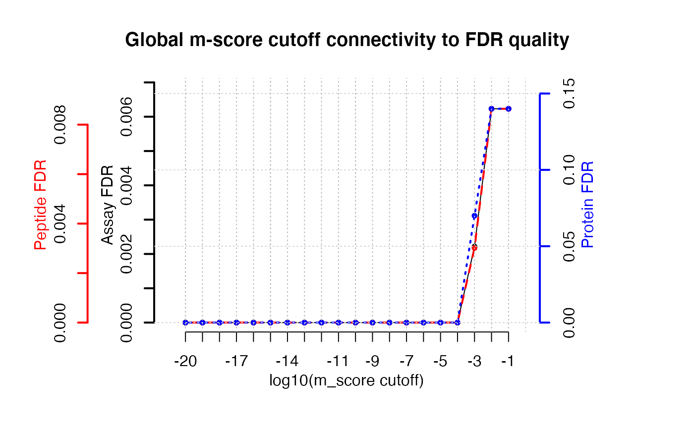

R/assess_fdr_overall.R
assess_fdr_overall.RdThis function estimates the assay, peptide and protein FDR over a multi-run OpenSWATH/pyProphet output table. It counts target and decoy assays (unique transition_group_id), peptides (unique FullPeptideName) and proteins (unique ProteinName) in dependence of the m-score cutoff (1e-2 to 1e-20). To arrive from decoy counts at an estimation of the false discovery rate (false positives among the targets remaining at a given mscore cutoff) the ratio of false positives to true negatives (decoys) (FFT) must be supplied. It is estimated for each run individually by pyProphet and contained in the pyProphet statistics [Injection_name]_full_stat.csv. As an approximation, the FFTs of multiple runs are averaged and supplied as argument FFT. For further details see the Vignette Section 1.3 and 4.1. Protein FDR control on peak group quality level is a very strict filter and should be handled with caution. FDR is calculated as FDR = (TN*FFT/T); TN=decoys, T=targets, FFT=see above
assess_fdr_overall( data, FFT = 1, n_range = 20, output = "pdf_csv", plot = TRUE, filename = "FDR_report_overall", score_col = "m_score" )
| data | Data table that is produced by the OpenSWATH/pyProphet workflow |
|---|---|
| FFT | Ratio of false positives to true negatives, q-values from [Injection_name]_full_stat.csv in pyProphet stats output. As an approximation, the q-values of multiple runs are averaged and supplied as argument FFT. Numeric from 0 to 1. Defaults to 1, the most conservative value (1 Decoy indicates 1 False target). |
| n_range | I am also not certain what this is, nor why 20 is the optimal default value, but I think the idea is to set up a series of mscore thresholds. |
| output | Choose output type. "pdf_csv" creates the output as files in the working directory, "Rconsole" triggers delivery of the output to the console enabling further computation or custom plotting / output. |
| plot | Logical, whether or not to create plots from the results (using the associated method plot.fdr_table() |
| filename | Optional, modifying the basename of the result files if applicable. |
| score_col | Column that contains the score. Default. m_score |
Returns a list of class "fdr_table". If output "pdf_csv" and plot = TRUE were chosen, report files are written to the working folder.
Moritz Heusel
{ data("OpenSWATH_data", package="SWATH2stats") data("Study_design", package="SWATH2stats") data <- sample_annotation(OpenSWATH_data, Study_design) assess_fdr_overall(data, FFT=0.7, output="Rconsole", plot=TRUE, filename="Testoutput_assess_fdr_overall") }#> $mscore_cutoff #> [1] 1e-01 1e-02 1e-03 1e-04 1e-05 1e-06 1e-07 1e-08 1e-09 1e-10 1e-11 1e-12 #> [13] 1e-13 1e-14 1e-15 1e-16 1e-17 1e-18 1e-19 1e-20 #> #> $target.assays #> [1] 337 337 316 293 278 255 238 218 195 179 155 143 126 108 102 102 102 102 102 #> [20] 102 #> #> $decoy.assays #> [1] 3 3 1 0 0 0 0 0 0 0 0 0 0 0 0 0 0 0 0 0 #> #> $assay.fdr #> [1] 0.006231454 0.006231454 0.002215190 0.000000000 0.000000000 0.000000000 #> [7] 0.000000000 0.000000000 0.000000000 0.000000000 0.000000000 0.000000000 #> [13] 0.000000000 0.000000000 0.000000000 0.000000000 0.000000000 0.000000000 #> [19] 0.000000000 0.000000000 #> #> $true.target.assays #> [1] 334.9 334.9 315.3 293.0 278.0 255.0 238.0 218.0 195.0 179.0 155.0 143.0 #> [13] 126.0 108.0 102.0 102.0 102.0 102.0 102.0 102.0 #> #> $target.peptides #> [1] 243 243 232 218 211 196 188 181 164 154 135 129 116 99 95 95 95 95 95 #> [20] 95 #> #> $decoy.peptides #> [1] 3 3 1 0 0 0 0 0 0 0 0 0 0 0 0 0 0 0 0 0 #> #> $peptide.fdr #> [1] 0.008641975 0.008641975 0.003017241 0.000000000 0.000000000 0.000000000 #> [7] 0.000000000 0.000000000 0.000000000 0.000000000 0.000000000 0.000000000 #> [13] 0.000000000 0.000000000 0.000000000 0.000000000 0.000000000 0.000000000 #> [19] 0.000000000 0.000000000 #> #> $true.target.peptides #> [1] 240.9 240.9 231.3 218.0 211.0 196.0 188.0 181.0 164.0 154.0 135.0 129.0 #> [13] 116.0 99.0 95.0 95.0 95.0 95.0 95.0 95.0 #> #> $target.proteins #> [1] 10 10 10 10 10 10 10 10 10 10 9 9 9 9 8 8 8 8 8 8 #> #> $decoy.proteins #> [1] 2 2 1 0 0 0 0 0 0 0 0 0 0 0 0 0 0 0 0 0 #> #> $protein.fdr #> [1] 0.14 0.14 0.07 0.00 0.00 0.00 0.00 0.00 0.00 0.00 0.00 0.00 0.00 0.00 0.00 #> [16] 0.00 0.00 0.00 0.00 0.00 #> #> $true.target.proteins #> [1] 8.6 8.6 9.3 10.0 10.0 10.0 10.0 10.0 10.0 10.0 9.0 9.0 9.0 9.0 8.0 #> [16] 8.0 8.0 8.0 8.0 8.0 #> #> attr(,"class") #> [1] "fdr_table"